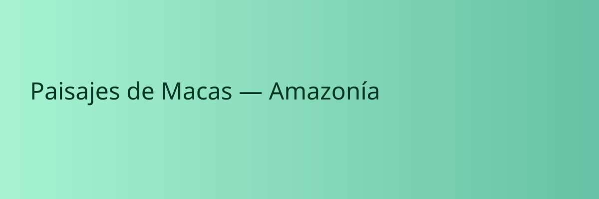

Cascada Los Cóndores
Un atractivo natural ideal para caminatas, fotografías y momentos de descanso junto a un entorno selvático.

Amazonía ecuatoriana
EcoMacas es una agencia ficticia de turismo que promueve experiencias amazónicas inspiradas en el destino real.
Macas, capital del cantón y provincia de Morona Santiago, combina selva virgen, cascadas, historia Shuar y experiencias de aventura para viajeros que buscan algo auténtico.
Atractivos
Un atractivo natural ideal para caminatas, fotografías y momentos de descanso junto a un entorno selvático.

Senderos, observación de aves y conexión directa con la biodiversidad amazónica.

Artesanías, tradiciones y relatos ancestrales que muestran la riqueza cultural local.
Recorridos diseñados con guías locales para vivir un viaje cercano a la comunidad y la naturaleza.
Promovemos prácticas sostenibles que respetan la identidad cultural y los ecosistemas amazónicos.
Opciones para familias, parejas, grupos y aventureros que buscan rutas personalizadas.
Paquetes intensivos, caminatas, excursiones culturales y visitas guiadas para una experiencia inolvidable.
Solicitar información